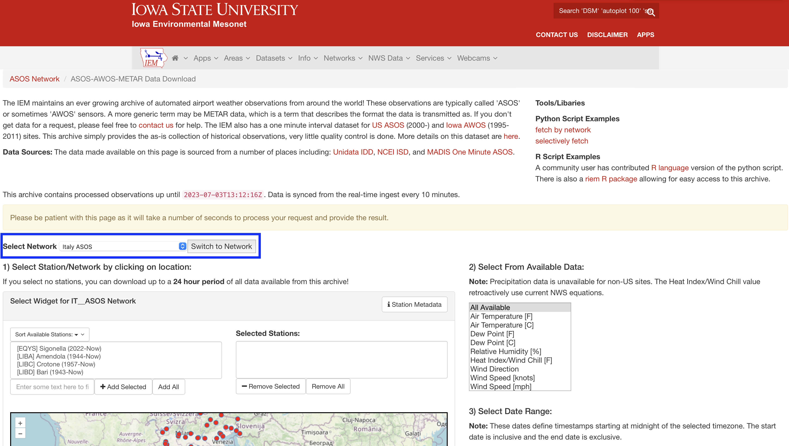
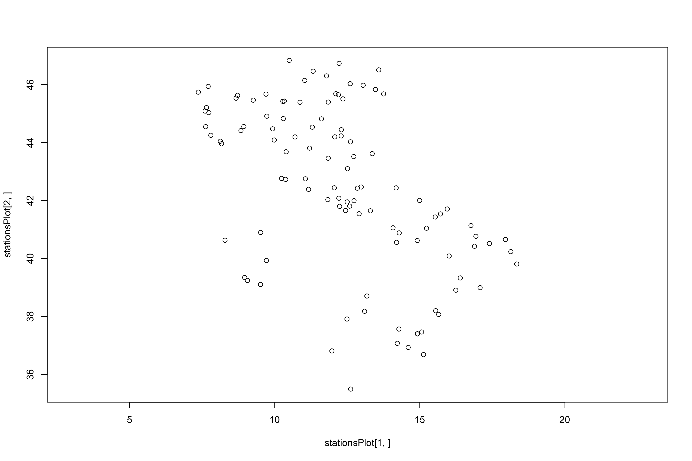
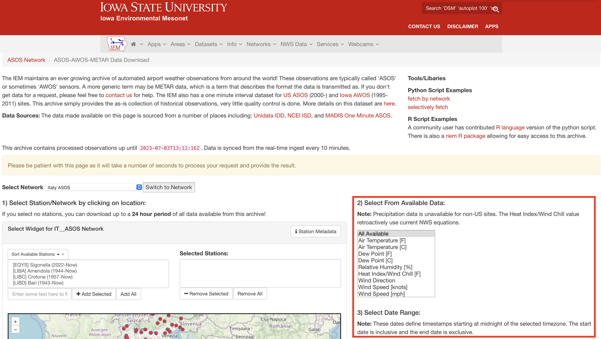

Automated download of weather data from Italian monitoring stations.
R
Climate change
Automated tasks
Weather data for all to download and analyse - 1
Author
Giuliano Colosimo
Published
July 4, 2023
Modified
July 4, 2023
Last year, during the Conservation Biology course I was teaching, I had planned to do a practical exercise and have the students download and analyse some historical weather data for Italy.
Not too long ago it was possible to download historical weather data relatively easily from a number of different websites. Unfortunately this option is no longer available and there really is only a handful of sites from which it is possible to download historical data for free.
One of them is here, hosted on the Iowa State University website. The user interface is pretty intuitive and it is possible to select from a pretty amazing variety of network of data from all over the world.
Another very cool thing about this portal is that it offers a few line of codes, in R and Python, to automate the download of the data of interest. I have tried the R script, but I couldn’t make it work “as is”. I did a few changes to the original code to make it do what it was supposed to do, and since I did it for my students I thought it would be nice to make a blog post. I here provide a full rundown on how to use the script. The description includes the installation of a few necessary packages to download historical weather data. The worked out example shows how to download data for the Italian peninsula, but with a few tweaks and changes it is possible to adapt it to download all data of interest.
Buckle up and lets begin. First of all, let me give you an overview of the OS and R version I am working with. After downloading the appropriate packages the code should work for all platforms. Regardless, I will start by sharing my session information.
sessionInfo()
R version 4.3.1 (2023-06-16)
Platform: aarch64-apple-darwin20 (64-bit)
Running under: macOS Ventura 13.4.1
Matrix products: default
BLAS: /Library/Frameworks/R.framework/Versions/4.3-arm64/Resources/lib/libRblas.0.dylib
LAPACK: /Library/Frameworks/R.framework/Versions/4.3-arm64/Resources/lib/libRlapack.dylib; LAPACK version 3.11.0
locale:
[1] en_US.UTF-8/en_US.UTF-8/en_US.UTF-8/C/en_US.UTF-8/en_US.UTF-8
time zone: Europe/Rome
tzcode source: internal
attached base packages:
[1] stats graphics grDevices utils datasets methods base
loaded via a namespace (and not attached):
[1] htmlwidgets_1.6.2 compiler_4.3.1 fastmap_1.1.1 cli_3.6.1
[5] tools_4.3.1 htmltools_0.5.5 rstudioapi_0.14 yaml_2.3.7
[9] rmarkdown_2.22 knitr_1.42 jsonlite_1.8.5 xfun_0.39
[13] digest_0.6.31 rlang_1.1.1 evaluate_0.21
So, I pretty much just opened R and didn’t attach any package but the ones that automatically are loaded when you open a new working session.
To accomplish this task we do need to install and load a few packages that will allow R to interact with web pages and read/download information from the specified website. The code below will install on your machine the necessary packages. Of course, you will not need this step if the packages are already installed.
# Installing the appropriate packagesinstall.packages(c("jsonlite", "RCurl", "lubridate", "dplyr", "ggplot2"))
Note
The output of the above line of code is not shown, as the packages are already installed on my machine.
Once installed we can load the packages in the current working session.
# Load packages in the working sessionx <-c("jsonlite", "RCurl", "lubridate", "dplyr", "ggplot2")lapply(x, require, character.only = T)
Loading required package: jsonlite
Loading required package: RCurl
Loading required package: lubridate
Attaching package: 'lubridate'
The following objects are masked from 'package:base':
date, intersect, setdiff, union
Loading required package: dplyr
Attaching package: 'dplyr'
The following objects are masked from 'package:stats':
filter, lag
The following objects are masked from 'package:base':
intersect, setdiff, setequal, union
Perfect. If you have a list with all TRUE values it means that everything worked fine, and we can move on to the next steps. We can now specify 2 important variables that will be used in the automated script. We need a start and an end date that will be used to identify the time window of interest for which we would like to download the data of interest.
# specify the date boundaries of our datasetdate1 <-ISOdate(1990,1,1) # start date in year, month, day formatdate2 <-ISOdate(2020,12,31) # end date in year, month, day format
The second step is to set 2 other variables containing the data network infrastructure from which we want to download the data and the specific country/state of interest.
user.network <-c("ASOS") # data networkuser.state <-c("IT") # state
If we were to do this procedure manually directly on the ISU web page at this point we will be selecting the appropriate country/state and network from the dedicated drop down menu, as shown in Figure 1.

Figure 1: Highlighted in blue is the drop down menu that we could use on the web page to select the specific country/state and data network of interest.
One of the advantages of the automated procedure through R, though, is that once we have perfected the procedure for a specified the country/state and data network we can repeat the same procedure over and over with different states and or location of interest. Anyway, lets keep going with our procedure. From Figure 1 it is possible to see that, after selecting the Italian ASOS network, a list of of available weather stations appears in the left box right underneath the Select Widget for IT_ASOS Network claim. What the web page is telling us is that of all the weather stations available for the ASOS network in Italy we can pick and choose the ones we want to download the data from. Unless we really know what we are doing and unless we know exactly the precise station we want data from we need to do a little more work to figure out how many stations are available, where they are and what is their specific ID.
So, using a little information taken directly from the URL bar of our browsers we can tell R to open a connection to the desired web page to download the information we need. We do this with the following few lines of code.
# Create and open a connectionnetwork <-paste(user.state, user.network, sep ="__")uri <-paste("https://mesonet.agron.iastate.edu/geojson/network/", network, ".geojson", sep="")data <-url(uri)jdict <-fromJSON(data)class(jdict)
[1] "list"
names(jdict)
[1] "type" "features" "generation_time" "count"
We have created and opened a connection to a .geojson file from the specified webpage containing all the necessary information. All the data are then stored in an object that we have called jdict. This is a list with four elements named as indicated above. Based on the names of the list elements we can infer that the second element of the list has the features of interest to us. We can look the first 5 rows of the data frame contained in the second element of the jdict list.
head(jdict[[2]])
type id properties.elevation properties.sname properties.time_domain
1 Feature LIMG 49.0000 Albenga (1973-Now)
2 Feature LIEA 23.0000 Alghero (1957-Now)
3 Feature LIBA 60.0000 Amendola (1944-Now)
4 Feature LIPY 10.0000 Ancona (1945-Now)
5 Feature LIMW 545.0000 Aosta (1984-Now)
6 Feature LIQB 246.8307 Arezzo (1978-2016)
properties.archive_begin properties.archive_end properties.state
1 1973-01-01 <NA> <NA>
2 1957-06-30 <NA> <NA>
3 1944-01-31 <NA> <NA>
4 1945-04-14 <NA> <NA>
5 1984-06-30 <NA> <NA>
6 1978-09-14 2016-03-06
properties.country properties.climate_site properties.wfo properties.tzname
1 IT NA NA Europe/Rome
2 IT NA NA Europe/Rome
3 IT NA NA Europe/Rome
4 IT NA NA Europe/Rome
5 IT NA NA Europe/Rome
6 IT NA NA Europe/Rome
properties.ncdc81 properties.ncei91 properties.ugc_county properties.ugc_zone
1 NA NA NA NA
2 NA NA NA NA
3 NA NA NA NA
4 NA NA NA NA
5 NA NA NA NA
6 NA NA NA NA
properties.county properties.sid properties.network geometry.type
1 NA LIMG IT__ASOS Point
2 NA LIEA IT__ASOS Point
3 NA LIBA IT__ASOS Point
4 NA LIPY IT__ASOS Point
5 NA LIMW IT__ASOS Point
6 NA LIQB IT__ASOS Point
geometry.coordinates
1 8.1256, 44.0458
2 8.2886, 40.6311
3 15.7139, 41.5381
4 13.3603, 43.6167
5 7.3687, 45.7385
6 11.8456, 43.4597
As anticipated, this element contains all the information we need. There are 107 stations in Italy from where we can download data. Of the many variables for each location what is more important to us is the id of each station, its properties.sname, the properties.time_domain and the geometry.coordinates of each station. In fact, as a simple exercise we can make a plot to see how and where are the stations distributed.
stationsPlot <-matrix(unlist(jdict$features$geometry$coordinates), nrow =2)plot(stationsPlot[1,], stationsPlot[2,], asp =1)

Figure 2: Location of all weather stations around available from the ISU repository.
It is interesting to see that there are so many stations that they can pretty much reproduce the outline and profile of the iconic Italian boot (Figure 2)! This is all nice and good. Now lets get to the fun part. Let us say that we want to download data from ALL the stations available. Using the web interface from Figure 1 we would be selecting all the stations from the left box, move them to the right box. Then go to the right side of the page (Figure 3) and specify a number of things like the kind of desired output (CSV rather than TXT rather than DAT), the appropriate dates for the time window of interest and what kind of weather variable we would like data for (temperature, rain, wind, etc. etc. etc.).

Figure 3: Highlighted in red is the section of the page where to specifiy the kind of information needed, the time window of interest and the specific output format.
Note
Please remember these two points. First, not all stations will have data available for the time window selected. Some stations were only recently activated and it is therefore unlikely that we will be able to get data since, for example, 1970. The other issue is related to the type of variable available for download. The only variable available for bulk download in many data network not US based is only temperature!
Now we create a string that contains an URL with the start date and the end date. This is the URL that would appear every time we would download manually the information from the website. At this time we still do not have any information re which station we request the data from.
Now we set the working directory to a dedicated folder. Note that the data could be large several GB, and it may be convenient to store them on an external hard drive.
setwd("path/to/your/folder/of/choice")
OK. We are almost there. The final part of this tutorial consists in creating a loop that will take the part of the URL that is constant every time and add, recursively until the very last one, the ID of the weather station we want the data from. Once again, when you run the script make sure that you have enough space on your dedicated folder and that you have enough time and a good internet connection to download all the data. Needless to say that if you first want to try the script on only a few stations you can subset the stations ID and select only 1 or 2 for a quick test.
As the loop proceeds you should see information on what is being downloaded printed on your R prompt.
Important
Depending on your internet connection it may happen that your download procedure will stop because of time out issues! Unfortunately I am yet to find a proper solution to this problem. Of course, you should make sure that you work with a stable and fast internet connection. If the issue manifests itself, and it usually does with large files, what you can do is to edit the vector of stations to download to momentary exclude the station that gives you problem, finish the download of the other stations and then come back to the one that gives problem to download it by itself.
Once the procedure is completed you will have all your data ready to be analysed in your folder. In the next post we will try to look at some of the downloaded data and make a few basic analysis.
Did you like this post? Let me know by e-mail what you think of it or if you were unable to make it work. Till next time.